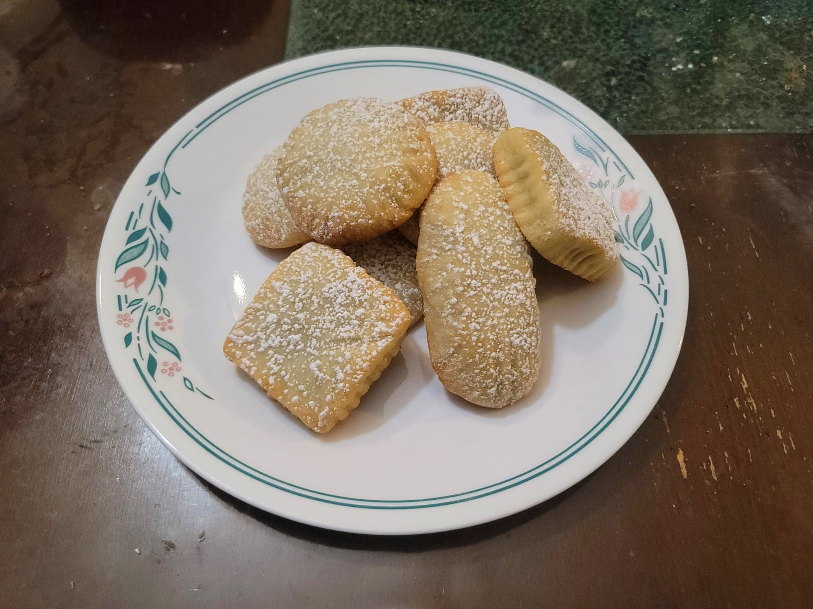

Maamoul

Ingredients:
First Stage:
- 350 g Fine semolina
- 125 g Flour
- 1/2 tbsp Mahleb
- 1/4 tsp Salt
- 1 cup (250 g) Ghee or Butter, melted
Second Stage:
- 1 tbsp Milk powder
- 1/4 tsp Active dry yeast
- 3 tbsp Simple syrup, rose or orange blossom flavored
- 1/4-1/3 cup Warm milk, as needed
Date Filling:
- 150 g Dates, preferably Medjool dates
- 1 tsp Ghee or Butter
- 1 tbsp Cinnamon, Rose water, or Orange blossom water
- 1 tbsp Sesame seeds
Pistachio Filling:
- 150 g Pistachios
- 1/2 tbsp Powdered sugar
- 2 tbsp Simple syrup
- 1/2 tsp Ghee or Butter
Walnut Filling:
- 150 g Pistachios
- 1/2 tbsp Powdered sugar
- 2 tbsp Simple syrup
- 1/2 tsp Cinnamon
- 1/2 tsp Ghee or Butter
To Top:
- Powdered sugar, to garnish
Instructions:
- Combine the first stage ingredients and knead until fully incorporated. Cover and refrigerate overnight or up to 3 days.
- Remove the dough from the fridge and let return to room temperature. Knead in the second stage ingredients, adding just enough milk for the dough to be soft but not sticky. It should be soft enough to not form any cracks when pressed. Cover and let rest for at least 1 hour. Then form the dough into 24 equal balls.
- Preheat the oven to 350 degrees Fahrenheit.
- Make 3 total batches of any of the fillings. For each filling, add the ingredients to a food processor and pulse until it forms a paste. For the walnut or pistachio fillings, optionally do not bring to a fully smooth paste for texture. Divide the filling into 24 equal balls.
- Take a ball of dough and make a deep indent with your thumb. Then place in a ball of filling and seal to close. Then shape or mold it into a flat disc or as desired and make decorative marks with a fork. Alternatively, use a maamoul mold. If making multiple flavors, mold each flavor into a different shape/pattern to differentiate them. Place onto a baking sheet and repeat for the rest of the cookies.
- Bake in the oven for about 17-20 minutes or until just lightly pale golden. Then remove and let cool completely.
- Once cool, dust with powdered sugar. Serve immediately.